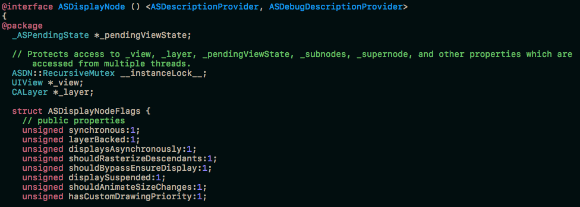

最近在看ASDK（AsyncDisplayKit）源码的时候看到了ASDK写了一个ASDisplayNode的extension，里面声明了一堆ivar，然后又在各种ivar之前加入了@package、@protected、@public的字段，出于好奇它的作用，我先去查了一下这四种关键字的意义，如下：
当extension声明在.h或者声明在.m中，里面ivar的作用域是不同的。
而如果extension是声明在.m文件里的，无论如何在这个.m以外，都无法获取到这个extension里变量。（这也是通常的写法）
但是在ASDK里，会将extension声明在一个单独的头文件里，然后写成如下一般：

这里刷新了我的三观= =。如果将extension暴露给外部的话，那这些关键字就有效果了。extension里的变量默认为私有，如果用上面的四种关键字来更改作用域的话，就可以在外部被访问到了（前提是你包含了这个头文件）。
单例模式是一个在iOS里面备受使用的设计模式。但是我们在尽情使用它的时候，一定要注意到它其实也有很多隐含的问题。 其实这篇文章也相当于看了objcio上的避免滥用单例的一篇总结。 结合自己最近开发的心得，来讲一下单例的一些利与弊吧。首先单例最原始的创建方式就是但是这种创建方式在多线程环境下会出问题，假如两条线程同时执行到if的话，就会各自获取到两个实例了。为了解决这个问题，我们可以想到上锁，于是有了下面这个版本：但是因为我们都知道，访问一个锁的开销很大，考虑到性能的问题，iOS在最后给我们推出了……
继续阅读